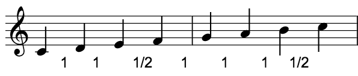

En dur-skala, om man spiller den fra bunnen og opp, er en bestemt rekkefølge av halvtoner og heltoner.
En halvtone er avstanden mellom f. eks C og C#, eller A og Ab. En halvtone kalles også en liten sekund.
En heltone er avstanden mellom f. eks C og D, eller F og G. En heltone kalles også en stor sekund.
Tonene kalles små og store sekunder fordi de kan begge være den andre tonen i en skala.
Hør på sekund-intervallene her ved å trykke på knappene. Du kan også lete etter lignende intervaller på pianoet.

Bildet over viser heltonene (1) og halvtonene (1/2) i en dur-skala.
Trykk for å høre skalaen i lavt tempo. Prøv å høre etter heltonene og halvtonene.